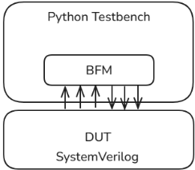
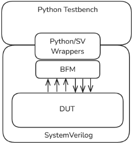
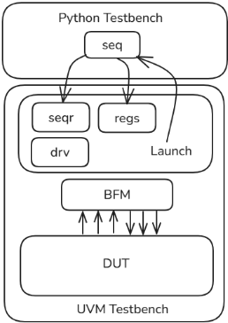
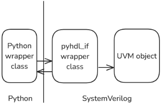

将 Python 正确引入 UVM Testbench
该论文针对 Python 在验证领域占比仅约 5% 的现状，指出两种既有集成路线的缺陷：cocotb 走仿真器信号级 API，无法复用既有 UVM 组件；wrapper 式 DPI 集成虽可在 task/function 抽象级互调，但逐组件封装与维护成本高。作者提出直接构建在 UVM 自身 API 之上的集成方案，并实现为 Apache 2.0 开源库 PyHDL-IF：通过 SystemVerilog 代理对象（如 pyhdl_uvm_sequence_proxy）让 Python 类直接充当 UVM sequence/component，通过成对 wrapper 类在 task/function 级双向调用，并利用 uvm_field 宏、print 输出一次性解析与 pack/unpack 实现对用户自定义 transaction 字段的读写与随机化控制。库还可运行 pyhdl_uvm2py 测试自动生成 Python mirror 类，使 MyPy/IDE 静态检查与 AI 编码助手获得类型化上下文，并支持对 scoreboard 等 testbench 组件做无需仿真的 Python 单元测试。结论是可在几乎消除逐 testbench 集成工作的前提下，把 Python 低成本、高性能地引入既有 UVM 环境。
Python 拥有庞大的库生态且对 LLM 友好，但在验证领域市场份额仅约 5%。现有两种集成方式各有硬伤：cocotb 通过 VPI/VHPI 在信号级交互，抽象层级与 UVM 组件（task/function 调用激活）不匹配，导致既有 UVM 资产（如协议 VIP）难以复用；wrapper 式 DPI 集成虽支持同抽象级互调，但为每个 testbench 组件设计、实现和维护封装代码的成本显著，阻碍在既有 UVM 环境中采用 Python。
核心是 PyHDL-IF 开源库（Apache 2.0）的 UVM 专属集成层，关键技术手段包括：(1) SystemVerilog 代理对象家族（如继承 uvm_sequence 的 pyhdl_uvm_sequence_proxy），在 SV 侧持有 Python 对象引用，将 UVM 库对代理方法的调用转发到 Python 实现；(2) 成对 wrapper 类（SV wrapper + Python accessor）实现 UVM API 的双向调用，并按 Python 习惯调整签名（如 get_config_object 返回 tuple）；(3) 利用 uvm_field 宏提供的 print 文本输出（每个类类型仅解析一次以建立类型信息）与 pack/unpack API，实现对未注册为命名 UVM 对象的用户自定义字段（如 seq_item）的读取、写入与 control-knob 式随机化控制；(4) 运行专用 UVM 测试 pyhdl_uvm2py 自动生成带类型标注的 Python mirror 类（dataclass 形式），支撑 MyPy/IDE/AI 助手；(5) 基于 mirror 类在仿真之外对 testbench 组件做 Python 单元测试，并作为 AI 编码助手的自纠错反馈机制。
未在论文中说明
相对已有工作的区别在于同时融合两条既有路线的优点：像 cocotb 一样几乎无需逐 testbench 集成工作，又像 wrapper 式集成一样在 task/function 抽象级复用既有 UVM 组件，其可行性来自直接利用 UVM 库自身定义良好的 API 而非另建接口层。此外，论文还提出两项配套能力：从运行时集成机制自动派生 Python mirror 类以支持静态工具与 AI 编码助手，以及借助 mirror 类对 testbench 代码进行仿真外单元测试并与 AI 助手形成自纠错闭环。论文同时说明与 Pymtl3（面向自包含设计/验证 collateral）和 pysv（仅支持 SV 调 Python、不支持 Python 调 SV task）等库的定位差异。
相关度级别：high
命中能力域：2.4 设计验证方法学 | 2.7 EDA/验证自动化与 AI 辅助
理由：论文直接命中团队 2.4 域的 UVM 验证平台建设与 2.7 域的验证自动化/AI 辅助方向：它给出一个可直接采用的开源方案，在不重写既有环境的前提下把 Python 引入 UVM testbench，复用现有 sequence/component/register model，并原生支持 MyPy 静态检查、单元测试与 AI 编码助手工作流。团队在 LPDDR/UCIe/HBM 等产品线上积累了大量 UVM 基础设施与协议 VIP，该方案提供了在不废弃这些资产的情况下引入 Python 生态（数据处理、参考模型、AI 辅助编码）的工程路径，与团队沉淀可复用方法学与自动化能力的目标高度一致。
建议动作：深入精读并做内部分享
Matthew Ballance
超威半导体公司（Advanced Micro Devices, Inc.），美国俄勒冈州波特兰
matt.ballance@gmail.com
在仿真测试平台（testbench）中使用 Python 具有许多吸引人的方面，其中包括庞大的库和工具生态系统。而障碍则包括集成工作量，以及复用现有通用验证方法学（UVM）内容的能力受限。本文提出一种以 UVM 为中心的集成方法，由一个开源库实现，该方法几乎消除了每个测试平台的集成工作，同时保留了以高性能方式复用现有 UVM 资产的能力。示例重点展示了这种集成方法所支持的关键用例。
我们编写的大部分测试平台（testbench）代码实质上都是面向对象软件。记分板（scoreboard）、随机激励生成器和测试序列都大量运用了软件技术。根据西门子（Siemens）与 Wilson Research Group 的 2024 年验证趋势报告 [1]，这些以软件为中心的活动至少占验证活动的 36%。人们自然会推测，在这些方面使用纯软件语言是否会提高生产力。毕竟，流行语言顾名思义拥有更庞大的熟练工程师群体，以及更庞大的工具与支持库生态系统。
AI 友好度——即大语言模型（LLM）对一门语言的熟练程度——也是一个相关的考量因素，尤其是在 AI 编程助手日益普及的当下。在这一点上，LLM 同样往往在流行语言上表现更为出色。
多年来，Python 一直是一门极为流行的语言，在过去五年中稳居 TIOBE 排行榜榜首 [2]。尽管有这些看似显著的优势，但根据 Wilson 调查，Python 在验证领域的市场份额却相对有限，仅为 5%。
目前有两种将 Python 集成到仿真测试平台的方法，每种方法各有优缺点。

cocotb [3] 最早发布于 2013 年，它通过仿真器的信号级 API（VPI 和 VHPI）进行集成，并在信号层面与设计交互。这使得与设计的集成变得动态而简单。然而，由于抽象层次的差异，复用现有的 SystemVerilog UVM 组件充其量也是困难的：UVM 组件通过 task 和 function 调用来激活，而 cocotb 只能与设计中的信号交互。因此，除了用 Verilog 或 VHDL 编写的设计之外，cocotb 测试平台环境往往完全是纯 Python 的。这对在现有 UVM 测试平台环境中采用 cocotb 构成了重大障碍，因为在这些环境中，人们已经投入了数千小时来构建用于与标准协议交互的 UVM 基础设施。

基于封装（wrapper）的 Python 与 SystemVerilog 集成方式使用接口代码（通常是生成的），借助仿真器扩展 API（例如直接编程接口（DPI））来实现两种语言之间的相互调用。这类集成方式改善了对现有测试平台组件的复用，因为它们允许 Python 与 SystemVerilog 在与验证组件通常实现方式相同的 task 和 function 抽象层次上进行交互。然而，设计、实现和维护这种集成基础设施的工作量可能相当可观。这减缓了 Python 在现有测试平台环境中的采用速度，因为必须花费时间将每个不同测试平台组件的 API 恰当地封装并暴露给 Python。
还有其他一些专注于设计与验证的基于 Python 的库，但它们所解决的问题与将 Python 验证内容连接到现有测试平台环境并不相同。例如，Pymtl3 [6] 专注于捕获自包含的设计与验证资料，缺乏将 Python 连接到现有 SystemVerilog 测试平台环境的功能。pysv [7] 专注于为 Python 方法创建 C 封装，使 SystemVerilog 能够通过 DPI 调用被封装的 Python 方法，但不支持 Python 调用 SystemVerilog 的 task。

理想的 Python 与 SystemVerilog 集成方式应当兼具上述两种方法的优点。简而言之，它只需很少的集成工作量，同时能够在 task 和 function 调用层面实现 Python 对现有 UVM 验证组件的复用。幸运的是，UVM API 提供了实现这种集成所需的全部能力。
PyHDL-IF[4] Python 库在 SystemVerilog 与 Python 之间实现了一个基于任务和函数的通用接口。SystemVerilog 环境可以利用该库调用任意 Python 库，同时该库还实现了一种基于包装器（wrapper）的机制，以支持 Python 对 SystemVerilog 任务和函数的调用。PyHDL-IF 还提供了一个 UVM 专用库，这正是本文的主题。该库中 UVM 专用的部分提供了三个关键功能领域：
UVM 提供了两种用于启动行为的关键机制：组件（component）和序列（sequence）。两者都既可以用来启动以 Python 实现的行为，也可以用来启动以 SystemVerilog 实现的行为。
PyHDL-IF 库提供了一族 SystemVerilog 代理（proxy）对象，这些对象在 UVM 环境的 SystemVerilog 部分中构造，并持有对某个 Python 对象的引用。当 UVM 库调用 SystemVerilog 代理的相应方法时，该 SystemVerilog 代理负责调用 Python 实现上的关键方法。
清单 1 给出了一个简单的基于序列的示例。UVM 序列的行为在其 body 方法中实现。UVM 确保在运行序列的过程中会调用该方法。
class base_test extends uvm_test; // ... task run_phase(uvm_phase phase); // Python 驱动的序列代理 typedef pyhdl_uvm_sequence_proxy #( .REQ(seq_item)) seq_t; seq_t seq; phase.raise_objection(this); seq = seq_t::type_id::create("seq"); seq.pyclass = "pyseq::PyRandSeq"; seq.start(m_env.m_seqr); phase.drop_objection(this); endtask endclass
pyhdl_uvm_sequence_proxy 类通过将 Python 类实例链接到 UVM 序列实例，用于在 Python 中实现序列。
pyhdl_uvm_sequence_proxy 类继承自 uvm_sequence，可以在任何序列器（sequencer）上运行，并且当运行在驱动序列项（sequence item）的序列器上时，可以用相应的序列项类型对其进行参数化。seq_item 类型的定义见清单 9。
该代理类具有一个字符串类型的字段，用于指定将实现该序列的 Python 类的名称。尽管本例指定的是硬编码的 Python 类名，但也可以使用动态机制来确定要运行的序列，例如加号参数（plus-args）。
class PyRandSeq(uvm_sequence_impl): async def body(self): for i in range (8): req = self.proxy.create_req() await self.proxy.start_item(req) req.randomize() await self.proxy.finish_item(req)
该序列的 Python 实现是一个类，它继承自 PyHDL-IF 库所声明的 uvm_sequence_impl 类。该序列实现重写了 body 方法，也可以重写其他由 UVM 定义的方法。序列实现通过 proxy 句柄访问 UVM 序列代理。该代理提供 UVM 定义的标准序列 API，以及一些特殊服务。例如，该代理提供 create_req 和 create_rsp 函数，用于构造适当类型的请求和响应序列项。
PyHDL-IF 库为 UVM 序列和 UVM 组件提供了代理类，使得只需对现有环境做极少的改动，即可轻松地集成 Python。

PyHDL-IF 库为 UVM 类提供了一组包装器（wrapper）。图 4 展示了该库用于访问 UVM 验证平台中对象所采用的包装器方案。Python 环境当前正在访问的每一个基于 uvm_object 的对象都对应一对访问器类。在 SystemVerilog 环境中，包装器类持有对该 UVM 对象的引用，并实现了访问器方法，将 Python 方法调用转换为 SystemVerilog 方法调用。当某个方法返回基于 uvm_object 的引用时，包装器类会构造一对新的 Python/SV 包装器对象，并返回其中的 Python 对象。
UVM 定义的 API 大多按原样对外暴露，除非其形式与 Python 的自然习惯明显相悖。
function bit get_config_object ( string field_name, inout uvm_object value, input bit clone=1);
代码清单 3：UVM get_config_object 签名。
这一类改动的一个例子是 uvm_component 类中的 UVM config-db 方法。SystemVerilog 使用 inout 参数来返回多个数据元素，而在 Python 中，遇到这种情况通常返回一个元组（tuple）。
def get_config_object(self, name : str , clone : bool =True) -> Tuple[ bool , UvmObject]:
代码清单 4：Python get_config_object 签名。
因此，get_config_object 的 Python 实现返回一个元组，其中包含状态（即指定名称的配置项是否存在）以及该配置项的值。
function void my_c::build_phase(uvm_phase phase); uvm_object obj; bit has; // ... has = comp.get_config_object("cfg", obj); endfunction
build_phase(self, phase):
def has, obj = comp.get_config_object("cfg")
代码清单 6：在 Python 中调用 get_config_object。
这种 API 签名上的差异，使得用 Python 编写的测试与该 API 交互的方式与 SystemVerilog 相比略有不同。这一差异很小，并且使该 API 符合 Python 的最佳实践。在代码清单 6 中，请注意 Python 如何将 get_config_object 返回的两个变量解包到各自的变量 has 和 obj 中。
PyHDL-IF 库还提供了一些便捷 API，使 UVM 验证平台的结构更易于访问。这类便捷 API 的一个例子是将寄存器块（register block）中的寄存器暴露为 Python 类字段。在这种情况以及类似情况中，这些命名对象都会注册到 UVM 库中。这些对象本可以通过在注册到 UVM 的对象中进行搜索来定位，但将它们暴露为 Python 类字段可以简化 Python 代码。
class spi_reg_block extends uvm_reg_block; `uvm_object_utils(spi_reg_block) rand reg_CTRL CTRL; rand reg_STATUS STATUS; rand reg_CLKDIV CLKDIV; rand reg_SS SS; rand reg_TXDATA TXDATA; rand reg_RXDATA RXDATA; // ... virtual function void build(); CTRL = reg_CTRL::type_id::create("CTRL"); STATUS = reg_STATUS::type_id::create("STATUS"); CLKDIV = reg_CLKDIV::type_id::create("CLKDIV"); SS = reg_SS::type_id::create("SS"); TXDATA = reg_TXDATA::type_id::create("TXDATA"); RXDATA = reg_RXDATA::type_id::create("RXDATA"); // ... CTRL .configure(this, null, ""); STATUS.configure(this, null, ""); CLKDIV.configure(this, null, ""); SS .configure(this, null, ""); TXDATA.configure(this, null, ""); RXDATA.configure(this, null, ""); endfunction endclass
清单 7 中的 SystemVerilog UVM 示例在一个寄存器块中创建了若干字段。请注意，这些对象都被赋予了名称，并通过 configure 函数注册到寄存器块中。UVM 提供了遍历块中寄存器并按名称访问它们的函数。用户创建的测试平台代码也可以将它们作为 SystemVerilog 类字段直接访问。
PyRegSeq(uvm_sequence_impl):
async def body(self): seqr = self.proxy.m_sequencer spi_regs : uvm_reg_block _,spi_regs = seqr.get_config_object( "spi_regs") spi_regs.CTRL.enable. set (1) spi_regs.CTRL.master. set (1) await spi_regs.CTRL.update() await spi_regs.CLKDIV.div.write(0x4) await spi_regs.SS.ss_mask.write(0x1) await spi_regs.TXDATA.write(0xA5) # Wait for for _ in range (100): await spi_regs.STATUS.read() if spi_regs.STATUS.tx_empty.get(): break
如清单 8 所示，PyHDL-IF 在 Python 中提供了便捷方法，将命名的 UVM 子对象暴露为 Python 类字段，使 Python 代码能够以与 SystemVerilog 中相同的模式与寄存器及寄存器字段进行交互。
已命名且已向容器类型（例如 component 或 reg_block）注册的 UVM 对象，可以使用现有的 UVM 访问 API 从 Python 中进行访问。而未以这种方式注册的字段则带来了另一项挑战。
class seq_item extends uvm_sequence_item; rand bit [7:0] addr; rand bit write; // 1=write, 0=read rand bit [31:0] data; rand bit [3:0] tid; // Simple constraints constraint addr_c { addr inside {[8'h00:8'hFF]}; } constraint data_c { if (write) data != 32'h0; } `uvm_object_utils_begin(seq_item) `uvm_field_int(addr , UVM_ALL_ON) `uvm_field_int(write, UVM_ALL_ON) `uvm_field_int(data , UVM_ALL_ON) `uvm_field_int(tid , UVM_ALL_ON) `uvm_object_utils_end function new(string name = "seq_item");
super.new(name); endfunction endclass
清单 9 中的 seq_item 类声明了若干随机字段。这些字段在 SystemVerilog 中有名字，但它们并未作为命名的 UVM 对象向 UVM 库注册。类似的类在 UVM 验证平台环境中被广泛使用，用于捕获 monitor 观察到的事务，以及控制发起端总线功能模型（BFM）。因此，具备读写这些类似事务的类中字段值的能力至关重要。
要实现对这些字段值的访问，必须做到两点：
幸运的是，UVM 直接或间接地提供了这两种能力。二者都由清单 9 中所示的 uvm_field 宏来支持。
从调试的角度来看，将事务连同其字段名和字段值一起显示出来非常有帮助。因此，UVM 提供了多个 API（例如 print、sprint）来生成事务的文本表示。类的创建者可以以 SystemVerilog 代码的形式提供该功能的核心实现，但 uvm_field 宏为此提供了自动化手段，以及一种简洁得多且更具声明式风格的方法。
| Name | Type ------------------------------------ | Size | Value |
|---|---|---|---|
| seq_item addr write data tid | seq_item integral integral integral integral | - 8 1 32 4 | @550 'h43 'h0 'ha8136875 'hc |
| Name | Type ------------------------------------ | Size | Value |
当对 seq_item 类调用 print 方法时，UVM 内置的格式化功能会产生上面的输出。这些信息提供了获取对象中各字段名称、类型和大小所需的全部内容。尽管可以通过解析该输出来读取类字段的值，但由于需要进行大量字符串解析，性能会很低。
UVM 提供了 pack 和 unpack API 用于获取和设置类字段。pack API 将已注册类字段的值转换为一个整数数组，而 unpack API 则执行相反的操作。打包后的数据不会保留任何关于其来源类布局的元数据。因此，打包数据的使用者必须了解该类的布局，才能正确地解释这些数据。
这两项由 UVM 提供的能力结合在一起，使 PyHDL-IF 库能够获取和设置继承自 UVM 类的用户自定义类中字段的值。
PyHDL-IF 库针对每种唯一的 UVM 类类型对事务文本输出进行一次分析，以创建用于访问类字段的类型信息。该库实现的 pack 和 unpack 方法返回并接受其布局与字段布局相对应的 Python 类。
PyRandSeq(uvm_sequence_impl): async def body(self): # Send a small burst of randomized items for i in range (8): req = self.proxy.create_req()
await self.proxy.start_item(req) req.randomize() vals = req.pack() print ("Addr:␣0x%08x" % vals.addr) await self.proxy.finish_item(req)
虽然看到那些无需修改 SystemVerilog 源代码即可找出可用类字段并访问其值的实现机制很有意思，但由此带来的用户体验才是最重要的。清单 11 中的代码片段在序列项被随机化之后对其调用 pack 方法。返回的对象定义了与通过 uvm_field 宏注册的字段相对应的字段。返回的对象包含字段的值，但在其他方面独立于该 UVM 对象。Python 代码可以访问这些值、遍历该类所定义的字段，并像使用任何其他 Python 类一样使用该值对象。但是，设置值对象中字段的值并不会改变 UVM 对象中字段的值。
UVM 的 unpack 方法提供了一种机制，使 UVM 类字段的值能够被设置。设置 UVM 字段值可用于完整指定序列项的字段值。它也可用于与约束求解器协同工作。PyHDL-IF 库使 Python 代码能够对 UVM 对象调用 randomize 来随机化其内容，但它并不支持 Python 代码添加新的约束。设置字段值使 Python 代码能够使用另一种常见的设计模式：随机化控制旋钮。
class seq_item extends uvm_sequence_item; bit ctrl_addr_page; bit[1:0] addr_page; rand bit [7:0] addr; rand bit write; rand bit [31:0] data; rand bit [3:0] tid; // Support full control of the page constraint addr_page_c { if (ctrl_addr_page) { addr[7:6] == addr_page; } } constraint data_c { if (write) data != 32'h0; } endclass
清单 12 中的序列项允许使用一对控制旋钮字段来控制地址的“页”（即高两位）。当 ctrl_addr_page 被设置为 1 时，addr 的高位将等于 addr_page 控制旋钮字段。当其为 0（默认值）时，addr 将完全随机。
class PyRandSeq(uvm_sequence_impl): async def body(self): # Exercise each page in turn for i in range (4): req = self.proxy.create_req()
# Get the current values val = req.pack() # Configure the knobs val.ctrl_addr_page = 1 val.addr_page = i # Set the field values req.unpack(val) # Randomize with control knobs req.randomize() await self.proxy.start_item(req) await self.proxy.finish_item(req)
unpack 方法提供了一种通过设置控制旋钮的值来从 Python 控制随机化的方法。请注意上述序列：
前文所述的功能已足以让 Python 与 UVM 测试平台进行动态交互。但是，考虑开发者的使用体验同样十分重要。Python 提供了丰富的工具，其中大多数工具都基于 Python 源代码运行。诸如 MyPy[5] 之类的静态检查工具能够在 Python 代码执行之前捕获错误。集成开发环境（IDE）提供代码导航、内容辅助以及内联的文档访问，从而提升开发者的工作效率。AI 助手则利用源代码以及静态检查器来承担更大规模的“从规格到代码”（spec to code）式任务，使 AI 助手既能给出建议又能验证内容。
所有这些工具的一个共同特点是：它们都基于 Python 源代码运行。PyHDL-IF 库允许 Python 代码在运行时查找所关注的 UVM 元素。这对提高集成效率非常有帮助，但无法支持这些关键开发工具的运行。幸运的是，同样的运行时集成特性还可用于自动提取 UVM 测试平台的 Python 表示。这些 Python 镜像类并非 Python 与 UVM 测试平台交互所必需，但它们提供了两项关键能力。首先，它们让工具了解如何通过 Python 正确地与 UVM 测试平台交互；其次，它们使 Python 测试平台组件能够独立于仿真环境进行单元测试。
PyHDL-IF 提供了一个名为 pyhdl_uvm2py 的专用 UVM 测试，其用途是读取基于 UVM 的类并创建相应的镜像 Python 类。
tasks: - name: extract-py-mirrors uses: "hdlsim.${{ sim }}.SimImage" needs: [sim-img, pyhdl-if.DpiLib] with: plusargs: - UVM_TESTNAME=pyhdl_uvm2py - pyhdl_outdir=${{ rootdir }}/python
如上所示，生成 Python 镜像类是通过在包含目标 UVM 测试平台环境的仿真映像上运行 pyhdl_uvm2py 来启动的。额外的 plusargs 指定 Python 类的输出位置，并支持控制要转换哪些 UVM 类。
import dataclasses as dc @dc.dataclass class spi_reg_block(uvm_reg_block): CTRL : reg_CTRL = dc.field() STATUS : reg_STATUS = dc.field() CLKDIV : reg_CLKDIV = dc.field() SS : reg_SS = dc.field() TXDATA : reg_TXDATA = dc.field() RXDATA : reg_RXDATA = dc.field()
其结果是一系列 Python 类，这些类反映了可从 Python 访问的 SystemVerilog UVM 元素。上述 Python 镜像类对应于前文所示的 spi_reg_block SystemVerilog 类。请注意，UVM 命名字段连同其类型一起以 Python 类属性的形式呈现。这使得静态检查和内容辅助工具能够验证用户代码的正确性，并在开发过程中向用户提供建议。
def test_write_mask_size1_and_mismatch(): sb = make_sb() # 只应存储/比较低字节 sb.write(MemTx(addr=0x600, we=True, data=0x1234, size=1)) sb.write(MemTx(addr=0x600, we=False, data=0x34, size=1)) assert sb.errors == 0 # 下一次读取时不匹配 sb.write(MemTx(addr=0x600, we=False, data=0x35, size=1)) assert sb.errors == 1
针对记分板的一个 AI 生成单元测试示例如清单 19 所示。
Python 镜像对象的存在简化了创建单元测试的过程。在对记分板进行更改的同时继续使用并扩展这些单元测试，有助于尽早发现错误，而无需运行和调试完整的仿真。
虽然 PyHDL-IF 库如今已可部署使用，但未来仍有若干增强方向值得探索。
目前，该库中针对 UVM 的部分主要聚焦于预定义的 UVM 类 API。未来的工作将扩展库中的 UVM 部分，以支持具有自定义 API 的 UVM 派生类。
在 SystemVerilog 中以注释形式记录类和方法的元数据（meta-data）是一种常见做法。增加对将元数据附加到 UVM 类类型的支持，可以使 SystemVerilog 中记录的文档附加到类上，并传播到由 PyHDL-IF 生成的 Python 镜像类中。将文档传播到生成的 Python 类中，将提升这些镜像类对 Python 代码分析和 AI 编码辅助工具的实用价值。
最后，根据用例需求扩展 UVM API 的覆盖范围将仍是一项持续进行的工作。
利用 Python 来实现测试平台环境中类软件的部分颇具吸引力，这得益于 Python 的流行程度及其庞大的生态系统。利用 UVM 库定义良好的 API，使 Python 能够以低投入、高性能的方式与现有环境集成。同样的特性还支持自动创建镜像测试平台 API 的 Python 类 API，并增强 Python 开发工具所提供的支持。所有这些特性均在 PyHDL-IF 中实现，这是一个采用 Apache 2.0 许可证的开源库，使工程师能够快速且高效地将 Python 添加到现有的 UVM 测试平台环境中。
[1] Siemens，《2024 年 Siemens EDA 与 Wilson Research Group 功能验证研究》。https://verificationacademy.com/topics/planning-measurement-and-analysis/2024-siemens-eda-and-wilson-researchgroup-functional-verification-study/